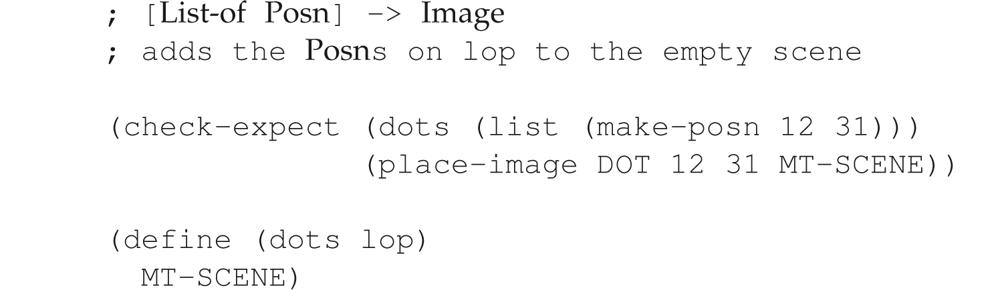
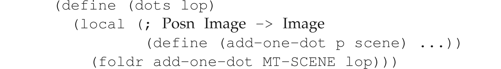
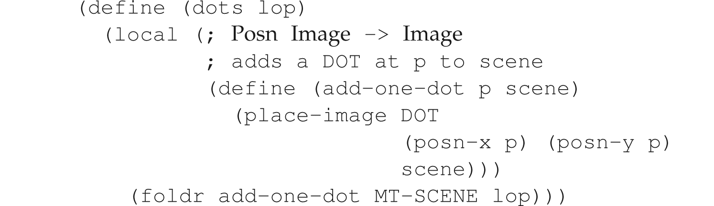

16.6 Designing with Abstractions
The three sample problems from the preceding section suffice for formulating a design recipe:
1. Step 1 is to follow the design recipe for functions for three steps. Specifically, you should distill the problem statement into a signature, a purpose statement, an example, and a stub definition.
Consider the problem of defining a function that places small red circles on a 200 × 200 canvas for a given list of Posns. The first three steps of the design recipe yields this much:

Add definitions for the constants so DrRacket can run the code.
2. Next we exploit the signature and purpose statement to find a matching abstraction. To match means to pick an abstraction whose purpose is more general than the one for the function to be designed; it also means that the signatures are related. It is often best to start with the desired output and to find an abstraction that has the same or a more general output.
For our running example, the desired output is an Image. While none of the available abstractions produces an image, two of them have a variable to the right of
meaning we can plug in any data collection we want. If we do use Image, the signature on the left of -> demands a helper function that consumes an X together with an Image and produces an Image. Furthermore, since the given list contains Posns, X does stand for the Posn collection.
3. Write down a template. For the reuse of abstractions, a template uses local for two different purposes. The first one is to note which abstraction to use, and how, in the body of the local expression. The second one is to write down a stub for the helper function: its signature, its purpose (optionally), and its header. Keep in mind that the signature comparison in the preceding step suggests most of the signature for the auxiliary function.
Here is what this template looks like for our running example if we choose the foldr function:

The foldr description calls for a “base” Image value, to be used if or when the list is empty. In our case, we clearly want the empty canvas for this case. Otherwise, foldr uses a helper function and traverses the list of Posns.
4. Finally, it is time to define the auxiliary function inside local. In most cases, this function consumes relatively simple kinds of data, like those encountered in part I. You know how to design those in principle. The difference is that now you use not only the function’s arguments and global constants but also the arguments of the surrounding function.
In our running example, the purpose of the helper function is to add one dot to the given scene, which you can (1) guess or (2) derive from the example:

5. The last step is to test the definition in the usual manner.
For abstract functions, it is occasionally possible to use the abstract example of their purpose statement to confirm their workings at a more general level. You may wish to use the abstract example for foldr to confirm that dots does add one dot after another to the background scene.
In the third step, we picked foldr without further ado. Experiment with foldl to see how it would help complete this function. Functions like foldl and foldr are well-known and are spreading in usage in various forms. Becoming familiar with them is a good idea, and that’s the point of the next two sections.